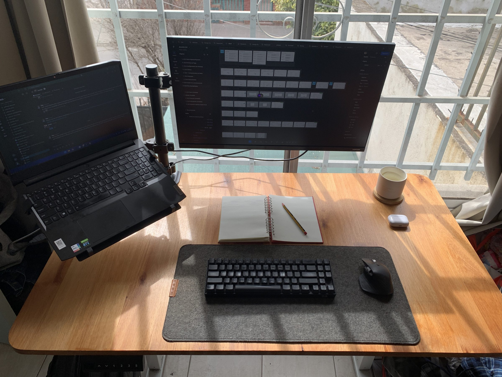

Proyecto 01
PróximamenteEstoy terminando de documentar este caso. Mientras tanto, algunos puntos clave del proceso:
- Research y definición del problema
- Iteración de flujos y wireframes
- UI final y sistema de componentes

Hacé click en los objetos del escritorio para explorar. Hacé click en la pantalla para entrar al portfolio.
Para cualquiera
Lápiz y papel primero. Bocetear a mano ordena mis ideas antes de que toquen una pantalla.
Diseño mejor cuando bajo el ritmo. Busco esa misma calma en las interfaces que construyo.
Pruebo herramientas nuevas todo el tiempo. Me interesa cómo la IA cambia el proceso, no solo el resultado.
El movimiento comunica lo que un mockup estático no puede. Lo uso como lenguaje, no como decoración.
Estoy terminando de documentar este caso. Mientras tanto, algunos puntos clave del proceso:
Segundo caso en preparación. Va a sumarse con el mismo detalle de proceso que el primero.